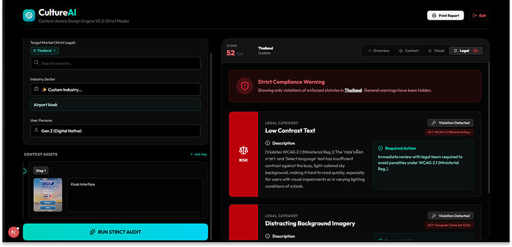

01Crawl
Extract colour palettes, type hierarchy and spacing.
02Analyse
Structural, visual and content features with ML.
03Score
Power distance, individualism and other dimensions.
04Report
Charts plus specific UI recommendations.
Scores website layouts, colours and hierarchy against Hofstede’s cultural dimensions.

